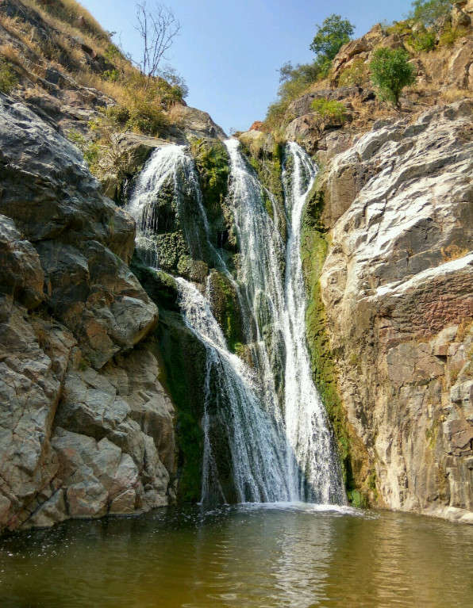

GULBARGA
1.Shri Sharana Basaveshwara Temple

The temple is dedicated to an eminent Lingayat religious teacher and philosopher, Shri Sharana Basaveshwara,a Lingayat
saint of the 12th century known for his Dasoha (Giving is earning) and Kayaka — an advancement of the Karma doctrine
"You have the right to perform the work assigned to you. You have no rights to 'demand' the fruits of your labor"
philosophy. The temple houses the Samadhi of Sharana Basaveshwara at the center called the garbha gudi. It also has
a lake adjacent to it which attracts many devotees and tourists.
People from across the country and abroad cutting across communal lines will converge on the sprawling temple complex
to witness the historic car festival. On the occasion, the people will also have a glimpse of the silver plate
(Prasada Battala) used by the saint. The Prasada Battala, which is displayed once in a year during the car festival,
would be shown to the devotees. Along with the Prasada Battala, the devotees will get a chance to have a look at
the Linga Sajjike (the cover used for keeping the Linga) made in Sandalwood and used by Sharanabhasaveshwara.
people, particularly farmers from the region, continue the practice of donating a portion of their harvest to the
temple for providing free food to pilgrims visiting the temple.
2.Dhab Dhabi water falls

Dhabi Dhabi waterfalls is located at a distance of about 150 kms from Gulbarga and 5km from Gurmitkal in Chintanahalli, Yadgir.
It is a good picnic spot for people to visit with family and friends.
In Dhabi Dhabi water falls from the height of about 100 feet and flows down through the hills. At the bottom of the
waterfall is Gavi Siddheshwar Temple. The water fall from this temple inside the cave. If visitors need to visit
the temple, then they need to pass through the waterfall to enter the cave. The waterfall is surrounded by lush
green scenic beauty of nature which is very adorable.
Dhabi Dhabi waterfalls is a quiet place and can be used for relaxing purposes after a busy day. This place is a 3 hour
drive from Hyderabad and can be visited on weekends to enjoy in a peaceful and calm surrounding.
Cool breeze along with the warmth of the sun can be felt on the top hills of the waterfall. Sound of water
hitting the rocky ravines can be heard around the surroundings of the waterfall, which is very soothing and wonderful.
3.Gulbarga Fort


The Gulbarga fort was razed to the ground by the Vijayanagar Emperor but was subsequently rebuilt by Yusuf Adil Shah
(1459–1511), who established the Adil Shah dynasty or Bijapur Sultanate, when he defeated the Vijayanagar emperor.
The Vijayanagara Empire was plundered and with this rich booty, the Gulbarga fort was refurbished.
The early history of the region dates back to the 6th century when the Rashtrakutas ruled over the external areas,
except Gulbarga city. The Chalukyas won back their domain and ruled for over two hundred years. The Kalachuris of Kalyani
succeeded them and ruled till the 12th century. At the end of the 12th century, it came under the reign of the Yadavas
of Devagiri and the Hoysalas of Halebid. During this period, the Kakatiya dynasty, kings of Warangal were also
powerful and took control of the present Gulbarga district and Raichur District.
4.Khwaja Banda Nawaz Dargha
Hazrath Muhammad bin Yousuf Al Hussaini Rh(Urduحضرت سید محمد بن یوسف الحسینی ), commonly known as Hazrat Khwaja Banda Nawaz Gaisu Daraz Rh(Urdu حضرت خواجہ بندہ نواز گیسو دراز )
(7 August 1321, in Delhi − 10 November 1422, in Gulbarga), was a Hanafi Maturidi scholar and Sufi saint from India of the Chishti Order, who advocated understanding,
tolerance and harmony among religions.
Banda Nawaz was born to Syed walShareef Muhammad bin Yousuf AlHussaini in Delhi in 1321. At the age of four, his family shifted to Daulatabad in Deccan (now in Maharashtra).
In 1397, he went to Gulbarga, Deccan (presently in Karnataka) at the invitation of Sultan Taj ud-Din Firuz Shah.
At the age fifteen, he returned to Delhi for his education and training by Nasiruddin Chiragh Dehlavi.
He was also a very enthusiastic student of Kethli, Tajuddin Bahadur and Qazi Abdul Muqtadir.
After teaching at various places such as Delhi, Mewat, Gwalior, Chander, Aircha, Chatra, Chanderi, Miandhar, Baroda, Khambayat and Gulbarga in 1397
and died in Gulbarga in the year November 1422.
5.Chandralamba parameshwari temple

Sannati is a village on the left bank of river Bhima in Chittapur taluq, Gulbarga district.
At Sannati is Chandrala Parameshwari temple, an important pilgrim place for Dasistha Brahmins.
A fort also existed at Sannati.
The story behind this temple goes like this- Goddess Chandrala Parmeshwari is an incarnation of goddess Lakshmi.
Chandrala Parmeshwari's Paduka (feet) was brought from Hongunti Hingulambika temple (near present day Shahbad town)
to Sannati to free her devotee Chandravadani who was held captive by an evil king named Setu Raya.
From the goddesses' Paduka emerged five bumble bees which drowned the evil king in river Bhima ending his life
there i.e. at Sannati.
6.Buddha Vihar